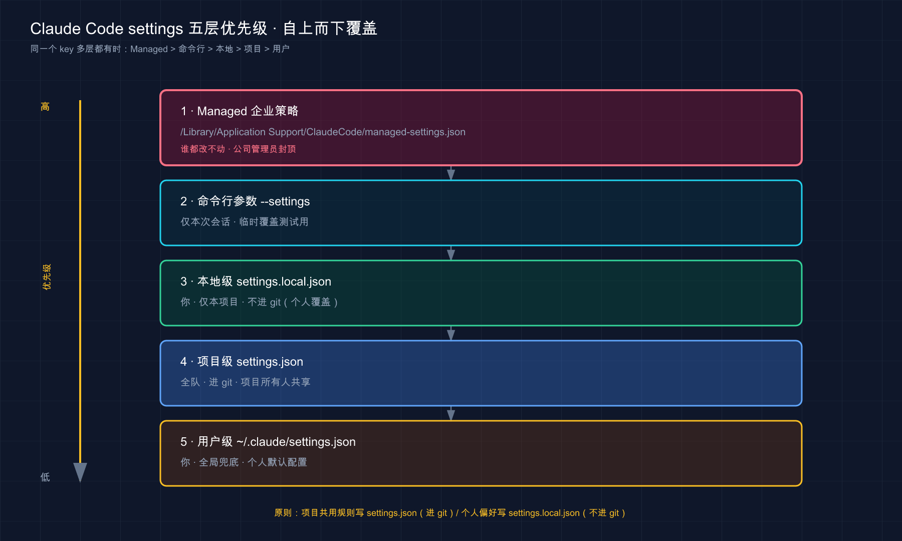

📚 系列导航：上一篇 30 功能怎么选：CLAUDE.md vs Skill vs Hook vs MCP vs Subagent 教你「需求来了该挂哪个扩展点」。这一篇往下挖一层——这些扩展点背后的开关，到底写进哪个文件、用户级和项目级谁压谁。
settings.json就是 Claude Code 那块总配电盘，今天把它的接线规则一次理清。
这里有件特别容易栽的蠢事，踩过一次就再难忘。
刚开始正经用 Claude Code 时，常见的操作是在某个项目的 .claude/settings.json 里塞一行 defaultMode: "auto"，想让它一进项目就自动放行、别老问。改完没反应。第一反应是写错了字段名，对着官方文档逐字核对三遍，一个字母都没错。再怀疑是 JSON 格式坏了，拿在线校验器跑一遍，合法得很。折腾大概二十分钟，甚至开始怀疑是不是 Claude Code 这个版本有 bug。
后来才在文档角落里看到那句话：defaultMode 设成 "auto" 时，写在项目设置里会被直接忽略——这是官方故意拦的，防止某个仓库偷偷给自己开自动模式（这点第 20 篇也提过）。那行配置语法全对、文件没坏，纯粹是写错了「楼层」。挪到用户级的 ~/.claude/settings.json 里，秒生效。
说这个坑是想让你记住一件事：settings.json 的坑，九成不在「怎么写」，而在「写在哪一层、哪一层压哪一层」。今天就把这套「楼层规则」掰开揉碎，让你下次配置时心里有数——这条该放主目录还是放项目里，一眼就知道。
看完这一篇，你会拿到：
- 一句话讲明白
settings.json是什么、它跟 CLAUDE.md 到底分什么工 - 三个层级（用户级 / 项目级 / 本地级）各自的文件位置、影响范围、该放什么
- 一张「谁压谁」的优先级表，外加一个最反直觉的例外（数组是合并不是覆盖）
- 几个你最常会动的配置项（
model、permissions、env、hooks、statusLine）分别干嘛、放哪层 - 一个能照着跑、给了预期输出的实战：写一份配置 → 用
/status验证它真生效
01 先搞懂：settings.json 是什么，跟 CLAUDE.md 分什么工
先给结论：settings.json 是 Claude Code 的「行为开关总成」——用 JSON 格式管权限、环境变量、默认模型、Hook、状态栏这些工具行为；它跟 CLAUDE.md 是两套东西，一个管「怎么干活」，一个管「记住什么」。
很多人一上来就把这俩搞混。你前面写了一路 CLAUDE.md（第 18 篇），又配了权限规则（第 20 篇），接下来还要配 Hook——这些东西最终都落在 settings.json 这个文件里，但它跟 CLAUDE.md 装的是完全不同的内容。
类比：公司的项目档案柜 vs 你工位上的电闸盒。 CLAUDE.md 像档案柜里那本《项目说明书》——写的是「我们用 pnpm 不用 npm」「提交前先跑测试」这类给人（给 Claude）看的、自然语言的约定，它每会话被读进去当背景。settings.json 不一样，它是工位墙上那个电闸盒——里面是一个个明确的开关：这个工具准不准用、默认跑哪个模型、改完文件自动触发哪段脚本。档案柜是「讲给它听的规矩」，电闸盒是「替它定死的机器行为」。
官方把它的定位说得很干脆：
settings.json文件是通过分层设置配置 Claude Code 的官方机制。
注意「官方机制」和「分层」这两个词，正好是这一篇的两条主线：它是配置 Claude Code 的正规入口（不是临时在命令行敲参数），而且是分好几层叠起来的（用户级、项目级、本地级）。
落到你会遇到的真实场景，settings.json 管的就是这几类事：
- 「这个项目里，
rm -rf这种命令给我拦死」——写permissions.deny - 「这个项目默认用 Sonnet 就行，别老用 Opus 烧额度」——写
model - 「每次它改完文件，自动跑一遍格式化」——写
hooks - 「我想让终端底下那行状态栏显示当前 git 分支」——写
statusLine
这些都不是「讲给 Claude 听」的话，而是实打实改变它运行行为的开关。这就是 settings.json 跟 CLAUDE.md 的根本分工。
💡 一句话总结：CLAUDE.md 是「讲给 Claude 听的自然语言规矩」，
settings.json是「替它定死机器行为的开关总成」——前者管记住什么，后者管怎么干活，两套东西别混着用。
02 三个层级：主目录、项目里、还是只在你这台机器
settings.json 最该先搞懂的，不是有哪些字段，而是它有三个层级，同一个文件名摆在三个不同位置，作用范围天差地别。开头那个坑，根子就在没分清层级。
类比：贴通知的三种地方。 同一条「下班记得关空调」的通知，贴在公司大门口（全公司每个项目都看得到）、贴在这间办公室门上（只有这个项目的人看得到、还登记进了办公室公约）、还是贴在你自己显示器边上的便利贴（只有你看、别人不知道）——范围完全不同。settings.json 的三个层级就是这三种「贴法」。
官方定义的三层，看这张表（外加最高的 Managed 层，企业 IT 专用，咱们小白基本碰不到，下一节单独提一句）：
| 层级 | 文件位置 | 影响谁 | 进 git 吗 | 该放什么 |
|---|---|---|---|---|
| 用户级（User） | ~/.claude/settings.json |
你，跨你所有项目 | 否（在你主目录） | 个人偏好：你惯用的模型、主题、跨项目都想要的工具 |
| 项目级（Project） | .claude/settings.json |
这个仓库的所有协作者 | 是（提交到 git 共享） | 团队约定：权限规则、Hook、共享的 MCP |
| 本地级（Local） | .claude/settings.local.json |
你，仅在这个仓库 | 否（自动 gitignored） | 个人覆盖、带凭据的实验性配置 |
三层的取舍，记住这三句就够：
- 「我所有项目都想要」→ 用户级（
~/.claude/settings.json）。比如「我习惯默认用 Sonnet」「我的状态栏脚本」，配一次，开任何项目都在。 - 「全队都该有、还得跟着仓库走」→ 项目级（
.claude/settings.json）。它被提交进 git，队友拉下来就有同一套配置，这是「配置即代码」。 - 「只我自己、这个项目专属、不想进版本库」→ 本地级（
.claude/settings.local.json）。
这里有个特别贴心的细节，官方明说了：当你创建 .claude/settings.local.json 时，Claude Code 会自动帮你把它加进 git 忽略。
Claude Code 将在创建
.claude/settings.local.json时配置 git 以忽略它。
为啥这么设计？想想看：本地级就是放「私人物品」的——你个人的实验配置、可能带点凭据的东西，这些本来就不该上交到版本库污染队友。官方替你把这道防线焊死了，省得你哪天手滑 git add . 把私人配置怼上去。这也呼应了第 21 篇讲的安全主线：敏感东西，从源头就别让它有机会进 git。
实战里怎么分：一个真实项目的三层分布
光记定义不够，看一个真实项目里这三层各放了啥，立刻就有体感：
- 用户级（
~/.claude/settings.json）：那套自定义状态栏脚本、默认模型偏好。这些跟具体项目无关，是「走到哪带到哪」的个人习惯。 - 项目级（
.claude/settings.json）：一组permissions.deny（禁curl、禁读.env）、一个「提交前自动跑 lint」的 hook。这些是全队的底线和卡点，必须进 git 让每个协作者拉下来都有。 - 本地级（
.claude/settings.local.json）：个人临时多放行的几条命令（团队没必要知道）、一个还在试验、没成熟到能分享给队友的 hook。
判断一条配置该放哪层，脑子里过一个问题链就够：「这条只我自己要 → 用户级或本地级；全队都要 → 项目级」，再细分一步：「全项目通用、还跟着我走 → 用户级；就这个项目、还不想进 git → 本地级」。
一个反方向的错很常见：图省事把项目专属的权限规则全堆进了用户级——结果换到另一个项目，那些规则全跟过来了，在不相干的项目里平白多出一堆莫名其妙的放行。这才能明白：「这条配置该跟着我走，还是该跟着项目走」，是分层的第一判断。跟着项目走的，老老实实放项目里。
💡 一句话总结：三层一句话区分——跨所有项目放用户级
~/.claude/settings.json、全队共享放项目级.claude/settings.json（进 git）、私人覆盖放本地级.claude/settings.local.json（自动 gitignored）；判断口诀「跟着我走 vs 跟着项目走」。
03 谁压谁：优先级，外加一个最反直觉的例外
三层都能写同一个字段。那问题来了：用户级说用 Opus、项目级说用 Sonnet，到底听谁的？ 这就是「优先级（precedence）」要管的事，也是 settings.json 最容易绕晕人的地方。
先给官方的优先级排序，从高到低（高的压低的）：
| 优先级 | 层级 | 说人话 |
|---|---|---|
| 1（最高） | Managed（企业 IT 部署） | 公司锁死的策略，谁都改不动 |
| 2 | 命令行参数（--settings 等） |
你启动时临时拍的板，只管这一次会话 |
| 3 | 本地级 .claude/settings.local.json |
你在这个项目的私人覆盖 |
| 4 | 项目级 .claude/settings.json |
团队共享的项目设置 |
| 5（最低） | 用户级 ~/.claude/settings.json |
你的全局默认，没人覆盖时才生效 |
这个「从高到低」的压制关系，画成一张图你会更有体感——高层像盖在低层上的纸，挡住下面写了同字段的部分：

这张图自上而下就是优先级从高到低：上面的层覆盖下面的层（仅限单值字段）。换句话说，越靠上的越「临时、具体」，越靠下的越「全局、兜底」——只有当上面所有层都没碰某个字段时，最下面的用户级默认才轮到生效。
一句话记牢这个顺序：越「具体到当下」的越大，越「全局兜底」的越小。命令行参数（就这一次）压本地（就这项目、就你），本地压项目（全队），项目压用户（全局）。官方给的例子最直观：
例如，如果您的用户设置允许
Bash(npm run *)，但项目的共享设置拒绝它，则项目设置优先，命令被阻止。
也就是说——你在主目录给自己开的绿灯，进了某个项目可能被项目设置一票否决。这恰恰印证了上一篇结尾埋的那个悬念：同一条配置，写在你主目录和写在项目里，效果可能正好相反。开头那个 defaultMode: "auto" 的坑，本质就是栽在没吃透这套层级语义上。
Managed 层，小白一句话带过就行。 它是企业 IT 通过 MDM、注册表或服务器统一下发的策略，优先级最高、用户和项目都覆盖不了，专门给公司强制执行安全合规用的（比如「全公司禁止 curl」）。你自己一个人用、或者小团队协作，基本碰不到它——知道有这么个「天花板层」存在就够了，真在受管控的公司环境里再去翻官方的 server-managed-settings 那页。
那个最反直觉的例外：数组是「合并」，不是「覆盖」
上面说的「谁压谁」，针对的是单个值（像 model 这种，你写一个值我写一个值，高层那个赢）。但有一类配置完全不按这个来，新手十有八九会栽——数组类配置（比如 permissions.allow / deny）是跨层「合并」的，不是覆盖。
啥意思？看官方原话：
数组设置跨作用域合并。 当相同的数组值设置出现在多个作用域中时，数组被连接和去重，而不是替换。
翻成大白话：你的权限规则不会被项目设置「整个换掉」，而是两边的规则「拼到一起」一块生效。
举个例子你立刻懂：
| 场景 | 直觉（错的） | 实际（对的） |
|---|---|---|
用户级 allow: ["Bash(npm run *)"]，项目级 allow: ["Bash(git diff *)"] |
项目级优先级高，所以只剩 git diff |
两条都生效：npm run * 和 git diff * 都被允许 |
这跟单值字段的「高层覆盖低层」是两套逻辑，一定要分开记：
- 单值字段（如
model、defaultMode）：高优先级层整个盖掉低层。 - 数组字段（如
permissions.allow/deny、env里的多个变量也类似拼装）：各层拼起来去重，谁都不会抹掉谁。
这个点很容易绊人：以为在项目级写了一组 deny，就把用户级那组宽松的 allow 顶掉了，结果发现用户级那些 allow 还在生效——因为它俩是合并的，不是替换的。理解了这条，你才不会「以为关了某个口子、其实它还从另一层敞着」。
💡 一句话总结：优先级口诀「越具体到当下的越大」（命令行>本地>项目>用户，Managed 封顶）；但数组类配置（尤其权限规则）是跨层合并去重、不是覆盖——这是最容易踩的反直觉点。
04 最常动的几个配置项：放哪层、干嘛用
层级和优先级理清了，来看你实际最常会去动的几个字段。settings.json 官方支持的键有上百个，但 90% 的人日常碰的就这么几个。我挑出来，每个讲清「干嘛的、放哪层最合适」。
先放一份麻雀虽小五脏俱全的示例，让你对长相有个整体印象（这是官方示例的精简版）：
{
"$schema": "https://json.schemastore.org/claude-code-settings.json",
"model": "claude-sonnet-4-6",
"permissions": {
"allow": ["Bash(npm run test *)"],
"deny": ["Bash(curl *)", "Read(./.env)"]
},
"env": {
"CLAUDE_CODE_ENABLE_TELEMETRY": "1"
}
}
开头那行 $schema 强烈建议你加上。它指向官方的 JSON 架构，加了之后在 VS Code、Cursor 这类编辑器里写配置会有自动补全和实时校验——字段名敲错、值类型不对，编辑器当场给你标红。开头那对着文档逐字核对字段名的二十分钟，要是当初加了这行 $schema，编辑器早就提示出来了。官方原话：
将其添加到您的
settings.json可在 VS Code、Cursor 和任何其他支持 JSON 架构验证的编辑器中启用自动完成和内联验证。
下面逐个拆这几个高频字段：
model：默认用哪个模型
model 决定这一层默认跑哪个模型。值填模型 ID（像 "claude-sonnet-4-6"）。
- 放哪层：看你的需求。「我个人就爱用某个模型」→ 用户级；「这个项目大家统一用 Sonnet 省额度」→ 项目级。
- 一个要注意的点：
model跟大多数字段不同，它在会话启动时只读一次，改了要么重启、要么会话里用/model现切。--model启动参数和ANTHROPIC_MODEL环境变量都能临时盖过它（模型相关详见第 5 篇）。
这个字段有个很顺手的用法：给不同项目配不同的默认模型。比如一个文档类项目，活儿都不重，就在它的项目级 settings.json 里写死 model 用相对轻量的型号；另一个核心代码项目则不设、保持用户级那个更强的默认。这么一分，进哪个项目就自动用哪个档位，不用每次手动 /model 切——既不浪费强模型的额度在简单活儿上，也不在硬骨头项目上将就。这正是「项目级压用户级」这条优先级的实用价值：项目级给这个项目定制，用户级兜底其余所有项目。
permissions：准不准用某个工具 / 命令
这是第 20 篇专门讲过的——allow（放行）、ask（每次问）、deny（拦死）三种规则，按工具、按命令精确控权。
- 放哪层：团队都该守的安全底线（比如「禁
curl」「禁读.env」）→ 项目级，进 git 让全队都有；你个人图省事想多放行几条 → 本地级或用户级。 - 记住第 03 节那条：
permissions是数组，跨层合并——别指望在某一层写deny就能把别层的allow顶掉。
env：给会话注入环境变量
env 里写的键值对，会作为环境变量应用到每个会话以及 Claude Code 跑起来的子进程。
类比：进车间前统一发的工牌和装备。 不管今天谁来上工，一进这个车间（会话）就自动配齐这套环境——env 就是这套「入场标配」，你在这儿声明的变量，会话里跑的每条命令、每个子进程都带着它。
- 典型用途：打开遥测（
CLAUDE_CODE_ENABLE_TELEMETRY）、给某个工具链塞个固定变量。 - 放哪层：项目专属的环境（比如这个项目要连的某个服务地址）→ 项目级；你全局都想要的 → 用户级。
hooks：在固定时机自动跑脚本
hooks 是上一篇反复提到、第 33 篇要专门拆的那个「事件触发自动动作」的入口——它就配在 settings.json 里。比如「每次改完文件自动跑格式化」「每次会话开始打个招呼」。
- 放哪层：团队都该跑的卡点（如「提交前自动 lint」）→ 项目级；你个人的自动化习惯 → 用户级。
- 具体怎么写、能监听哪些事件，这里先知道「它的家在
settings.json」就行，第 33 篇展开。
statusLine：自定义底部状态栏
第 14 篇讲过界面底下那行「状态行」。statusLine 让你自定义它显示什么——比如塞个脚本进去，实时显示当前 git 分支、当前模型、token 用量。
{
"statusLine": {
"type": "command",
"command": "~/.claude/statusline.sh"
}
}
- 放哪层：状态栏是个人视觉偏好，绝大多数人放用户级（
~/.claude/settings.json），配一次所有项目通用。
我把这几个常用字段「放哪层」的经验汇成一张表，纠结时直接查：
| 配置项 | 干嘛的 | 我的默认放法 |
|---|---|---|
model |
默认模型 | 个人偏好→用户级；项目统一→项目级 |
permissions |
工具 / 命令准入 | 安全底线→项目级（进 git） |
env |
注入环境变量 | 项目专属→项目级；全局→用户级 |
hooks |
事件触发自动动作 | 团队卡点→项目级；个人习惯→用户级 |
statusLine |
自定义状态栏 | 个人视觉→用户级 |
一个容易踩的混淆：不是所有配置都住在 settings.json 里
这点很多人不知道，往往是被报错教育才记住的。Claude Code 还有另一个配置文件 ~/.claude.json（注意，是主目录下的 .claude.json，跟 ~/.claude/settings.json 不是一个东西）。它装的是另一类东西：你的登录会话、用户/本地作用域的 MCP server 配置（第 22 篇提过 MCP 配置存这儿）、每个项目的信任状态、各种缓存。
关键的坑在于——有少数配置项官方规定就只能放 ~/.claude.json，你要是把它们写进 settings.json，会直接触发架构校验错误。官方点名的几个比如：autoConnectIde（外部终端自动连 IDE）、teammateDefaultModel（队友默认模型）这类。
典型的撞坑场景是想配「外部终端自动连 VS Code」，顺手写进了 settings.json，结果 $schema 校验当场标红、/status 也报错。翻文档才知道这字段的家在 ~/.claude.json。所以记住：settings.json 管「行为开关」，~/.claude.json 管「会话状态 / MCP / 缓存」这类幕后数据——绝大多数时候你只碰前者，但偶尔有字段「死活写不进 settings.json」时，先想想它是不是该去 ~/.claude.json。
💡 一句话总结：高频字段就这几个——
model（默认模型）、permissions（控权）、env（环境变量）、hooks（自动动作）、statusLine（状态栏）；「全队该有」放项目级进 git、「个人偏好」放用户级，加上$schema让编辑器替你查错；注意少数字段（如autoConnectIde）住在~/.claude.json而非settings.json。
05 在哪编辑、改完啥时候生效、怎么确认它真的读到了
字段会写了，还有三个特别实际的问题没解决：在哪改、改完要不要重启、怎么知道它真生效了。开头折腾的二十分钟，一半时间就耗在「不确定它到底读没读到这份配置」上。
在哪编辑：直接改文件，或者用 /config
两条路：
- 直接拿编辑器改那个 JSON 文件——按第 02 节的位置找到对应层级的文件改就行。本项目 CLAUDE.md 也建议「改文件优先用清晰的编辑」，比临时敲命令更可控。
- 会话里敲
/config——官方提供的交互式设置界面，能看状态、改一部分常用开关（主题、详细输出这类）。
一个容易误会的点官方专门澄清过：/config 里那个 Config 选项卡不是你 settings.json 文件内容的完整视图，它只是「主题、详细输出」等少数固定开关的编辑器。别指望在 /config 里看到你写的每一条配置——完整的还得去文件里看。
改完啥时候生效：大部分热加载，两个例外要重启
这是个好消息——Claude Code 会盯着你的设置文件，改了大多数键会在运行中的会话里直接生效，不用重启。官方明说：
Claude Code 监视您的设置文件，并在它们更改时重新加载它们……这包括
permissions、hooks和凭证助手。
但有两个例外，它俩是「启动时只读一次」的，改完得重启（或用对应命令现切）才认：
| 字段 | 改完怎么生效 |
|---|---|
model |
重启，或会话里用 /model 现切 |
outputStyle（输出样式，下一篇讲） |
重启，或 /clear 后重建 |
记这条的实际意义：你改了 permissions 或 hooks，存盘就生效，接着用；但你改了 model 发现没变化，别急着怀疑写错了——它就是要重启才认。开头那个坑要是发生在 permissions 上，本来存盘就能验出来，偏偏撞上了「层级被忽略」的特例，才多绕了那么久。
怎么确认它真读到了：/status 看「Setting sources」
这是最关键的一招，专治「我不确定它到底加载了哪份配置」。会话里敲 /status，里面有一行 Setting sources，列出当前会话实际加载了哪几层设置——比如 User settings、Project local settings（具体标签名以实际界面为准）。
官方对它的说明很实在：
Setting sources行确认正在读取哪些源……仅当该源至少加载一个键时，该层才出现在列表中，因此空列表意味着未找到任何设置源。
这话信息量很大，拆开看：
- 你写的那层出现在列表里 = 这份文件被成功读到了。
- 你写的那层没出现 = Claude Code 压根没找到 / 没读到它（多半是路径放错了，比如把
.claude/settings.json写成了settings.json）。 - 文件要是有语法错误（JSON 坏了、值不合法），
/status会直接报错给你看，省得你瞎猜。
所以以后配完一份 settings.json，第一件事就是敲 /status 确认那层真在列表里——这一步要是早知道，开头那二十分钟的弯路能省成两分钟。
配置不生效？照这张表排查
把这一篇所有「坑」收拢成一张排查表。下次你写的配置「没反应」，别急着怀疑语法，按这个顺序自查，基本一查一个准：
| 现象 | ❌ 别先怀疑 | ✅ 先查这个 |
|---|---|---|
| 改完完全没反应 | 字段名写错了？ | /status 看你那层在不在 Setting sources 里——不在就是路径放错了 |
model 改了不变 |
配置坏了？ | model 重启才生效（或 /model 现切），存盘不够 |
defaultMode: "auto" 不起作用 |
拼写错了？ | auto 在项目/本地级被忽略，得放用户级（第 03 节） |
写了 deny 但某命令还能跑 |
deny 没写对？ | 权限跨层合并，多半别层有条 allow 没抹掉（第 03 节） |
| 某字段死活写不进 settings.json | JSON 格式错了？ | 它可能住在 ~/.claude.json（如 autoConnectIde，第 04 节） |
你看这张表里，真正属于「语法写错」的几乎没有——绝大多数「不生效」都是层级、生效时机、合并语义这几个概念没吃透。这也正是开头那个坑最想传给你的一句话：settings.json 难的从来不是怎么写，是搞清它那套分层规则。
💡 一句话总结：改文件或用
/config（后者只管少数开关）；permissions/hooks存盘热加载、model/outputStyle要重启；配完务必/status看「Setting sources」那行确认你那层真被读到了；不生效先查层级别查语法。
06 动手：写一份用户级 + 项目级配置，用 /status 验证它真生效
光看不练假把式。下面带你亲手写两层配置、再用 /status 验证它们真被加载——把这一篇的「写文件 → 分层 → 验证」整条链路跑通一遍。全程用最小示例，不依赖你已有的复杂环境。
第一步：建个练手项目（在终端）
mkdir settings-demo && cd settings-demo
第二步：写一份项目级配置
在 settings-demo/.claude/settings.json 里贴入下面这份（放行测试命令、拦死 curl）。第一行 $schema 让你的编辑器顺手做校验：
{
"$schema": "https://json.schemastore.org/claude-code-settings.json",
"permissions": {
"allow": ["Bash(npm run test *)"],
"deny": ["Bash(curl *)"]
}
}
第三步：写一份本地级配置
再在 settings-demo/.claude/settings.local.json 里贴入一条只属于你、不进 git 的私人放行：
{
"permissions": {
"allow": ["Bash(git status *)"]
}
}
预期：这两个文件都建好后，你这个项目里就同时有了「项目级」和「本地级」两层配置。注意——按第 02 节说的，settings.local.json 会被自动 gitignore（下一步验证）。
第四步：确认本地级真被 git 忽略了
git init -q && git status --short
预期：输出里能看到 .claude/settings.json（项目级，待加入版本库），但看不到 .claude/settings.local.json——它被自动忽略了。看到这个差异 = 第 02 节那条「本地级自动 gitignored」在你这儿验证成功。
第五步：进会话，用 /status 验证两层都被读到
claude
进去后敲：
/status
预期：在弹出的状态信息里找到 Setting sources 那一行，它应该列出 Project local settings（可能还有你早先配过的 User settings），具体标签名以实际界面为准。看到你写的层都在列表里 = 那份配置被成功加载了。如果某一层没出现，回第 02 节核对文件路径有没有放错。
第六步：再用 /permissions 交叉确认规则生效
/permissions
预期：能看到刚写的规则——npm run test * 和 git status * 在允许列表里、curl * 在拒绝列表里。特别注意：git status * 来自本地级、另外两条来自项目级，但它们全都在生效——这正是第 03 节讲的「权限规则跨层合并、不是覆盖」的活例子。
跑通这六步，你就把 settings.json 最核心的能力亲手验了一遍：分层写、自动隔离私人配置、用 /status 确认加载、用 /permissions 看合并效果。以后配任何一层、任何字段，本质都是这套流程。
💡 一句话总结：动手就练「项目级 + 本地级两份配置 →
git status验本地级被忽略 →/status看两层都加载 →/permissions看规则合并」——亲手跑通这条链路，分层和合并这两个最绕的点立刻就通了。
07 小结
这一篇我们把 Claude Code 那块「总配电盘」settings.json 从里到外理清了——从「它是什么」到「分几层、谁压谁、改完怎么验」，把配置这件事规规矩矩安顿明白。
把核心要点串起来回顾：
| 你想搞清的事 | 答案 | 一句话关键点 |
|---|---|---|
| 它跟 CLAUDE.md 啥关系 | 两套东西 | CLAUDE.md 管「记住什么」，settings.json 管「怎么干活」 |
| 有几层、放哪 | 三层 | 用户级 ~/.claude/、项目级 .claude/（进 git）、本地级 .claude/settings.local.json（自动 gitignore） |
| 冲突听谁的 | 越具体越大 | 命令行>本地>项目>用户，Managed 封顶 |
| 最反直觉的点 | 数组合并 | 权限规则等数组跨层拼起来去重，不是覆盖 |
| 常动哪几个字段 | 五个 | model/permissions/env/hooks/statusLine |
| 改完怎么验 | /status |
看「Setting sources」那行确认你那层真被读到 |
你现在应该能： 分清 settings.json 和 CLAUDE.md 各管什么、知道一条配置该放用户级还是项目级、看懂「谁压谁」的优先级以及「数组合并不是覆盖」这个反直觉例外、认识 model/permissions/env/hooks/statusLine 这几个高频字段，并且配完会用 /status 确认它真生效。这套「分层配置」的能力，是你把 Claude Code 从「装好能用」调成「贴合你和团队工作流」的那把扳手。
开头那二十分钟的弯路，根子就一句话——没分清「写在哪一层」。这一篇之后，你能少走一大圈：配置不生效时，先别怀疑语法，先想「我是不是放错了楼层」，再敲个 /status 看一眼。
下一篇 32「输出样式（Output Styles）」——你刚在 settings.json 里见过一个特殊的 outputStyle 字段，还记得它是「启动时只读一次、要重启才生效」的两个例外之一吗？下一篇就专门讲它：怎么调 Claude 的「说话风格和系统提示」，让它从默认的「干活助手」切换成更适合讲解、教学或别的场景的样子。想想看：同一个 Claude，换一套输出样式，给你的回答风格能差出多远？